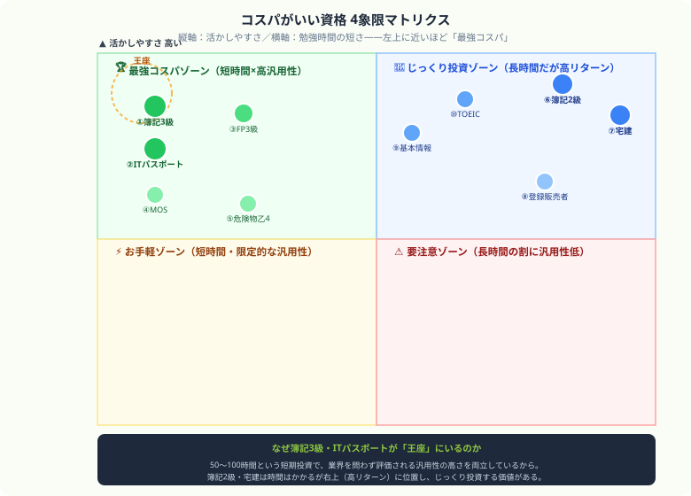

コスパがいい資格ランキング10選｜勉強時間・費用・活かしやすさで比較【2026年版】
こんにちは、大谷です！「就活や昇進のために何か資格を取りたいけれど、時間もお金も無駄にしたくない！」と悩んでテキストを検索した瞬間……「うわっ、なんじゃこりゃ、資格多すぎてどれが本当におトクなのか全然分からんわ！」とフリーズしていませんか？（笑）
毎日会計を猛勉強している僕の視点から、かけた時間と費用を最速で10倍にして回収できる「本当にタイパ・コスパ最強の10資格」を、ガチの本音主観で熱くナビゲートします！
また、記事の末尾のほうにある【いいねボタン】をポチッと押してもらえると、めちゃくちゃ励みになりますしすごく嬉しいです！それでは、一緒に見ていきましょう！
「なるべく少ない負担で、ちゃんと役立つ資格を取りたい」——そんな社会人にとって大事なのは、知名度だけでなくコスパです。本記事では、勉強時間、受験費用、実務や転職での活かしやすさを基準に、費用対効果の高い資格をランキング形式で紹介します。
コスパがいい資格の選び方
資格のコスパは、単純に「短期間で取れるか」だけでは決まりません。取るまでのコストと、取った後にどれだけ活きるかの両方で見る必要があります。
- 勉強時間：忙しい社会人でも現実的に確保できるか
- 受験費用・教材費：初期投資が重すぎないか
- 活かしやすさ：転職、昇進、副業、実務で使えるか
- 汎用性：特定業界だけでなく幅広く効くか

コスパがいい資格ランキングTOP10
日商簿記3級総合1位
勉強時間：50〜100時間｜受験・教材費：低め｜活かしやすさ：高い
事務、経理、営業、フリーランスまで幅広く役立つ定番資格。費用も学習時間も比較的軽く、ビジネス基礎としての汎用性が高いです。次に簿記2級へ進みやすいのも強みです。
ITパスポート初学者向け
勉強時間：50〜100時間｜受験・教材費：低め｜活かしやすさ：高い
IT未経験でも取り組みやすく、業界を問わずデジタル知識の証明になります。CBT方式で受験しやすく、最初の成功体験を作りやすい資格です。
FP3級実生活にも効く
勉強時間：80〜150時間｜受験・教材費：低め｜活かしやすさ：高い
保険、税金、年金、資産形成など、仕事以外の生活にも直結します。金融・保険・不動産系の入り口としても優秀で、FP2級への階段にもなります。
MOS
勉強時間：40〜80時間｜受験・教材費：低め｜活かしやすさ：中〜高
事務職や派遣、バックオフィス系で分かりやすく評価されやすい資格です。ExcelやWordを業務で使う人にとっては、短時間で実務力の見える化ができます。
危険物取扱者（乙4）
勉強時間：40〜80時間｜受験・教材費：かなり低め｜活かしやすさ：中〜高
製造業、物流、ガソリンスタンドなど、業界が合えば非常にコスパの良い資格です。資格手当や求人面で強く、短期で狙いやすいのが特徴です。
簿記2級
勉強時間：200〜350時間｜受験・教材費：中程度｜活かしやすさ：かなり高い
勉強時間は増えますが、経理・会計・管理部門への転職では評価が一段上がります。3級より負荷は高いものの、取った後のリターンも大きい資格です。
宅地建物取引士（宅建）
勉強時間：300〜400時間｜受験・教材費：中程度｜活かしやすさ：非常に高い
不動産業界では圧倒的に強い資格で、資格手当や転職優位性もあります。勉強量は軽くないですが、「取った後の回収力」が高いタイプです。
登録販売者
勉強時間：250〜350時間｜受験・教材費：中程度｜活かしやすさ：高い
ドラッグストア業界での需要が安定しており、求人も多めです。地域を問わず使いやすく、実務につながりやすい資格としてコスパは高いです。
基本情報技術者
勉強時間：150〜200時間｜受験・教材費：低〜中｜活かしやすさ：高い
IT系を目指す人には非常に良い資格です。未経験転職の足がかりになりやすく、ITパスポートより一段上の評価を得やすいです。
TOEIC
勉強時間：目標スコア次第｜受験・教材費：低〜中｜活かしやすさ：高い
資格というよりスコア指標ですが、転職市場での汎用性は非常に高いです。特に600〜730点あたりを取れると、多くの職種で履歴書上の強みになります。
コスパ比較表
| 資格 | 勉強時間 | 費用感 | 活かしやすさ | 向いている人 |
|---|---|---|---|---|
| 簿記3級 | 50〜100h | 低 | 高 | 事務・経理・ビジネス基礎を固めたい人 |
| ITパスポート | 50〜100h | 低 | 高 | IT未経験・社会人初学者 |
| FP3級 | 80〜150h | 低 | 高 | 金融知識・家計管理も学びたい人 |
| MOS | 40〜80h | 低 | 中〜高 | 事務職・PCスキル証明が欲しい人 |
| 危険物乙4 | 40〜80h | 低 | 中〜高 | 製造・物流系で働く人 |
| 簿記2級 | 200〜350h | 中 | 非常に高い | 経理・会計職を目指す人 |
| 宅建 | 300〜400h | 中 | 非常に高い | 不動産業界を目指す人 |
コスパだけで資格を選ぶと失敗するケース
たとえば、不動産に興味がない人にとって宅建は勉強負荷の割に重く感じるかもしれませんし、ITに触れる仕事がない人にとって基本情報は優先度が下がることもあります。コスパは大事ですが、最終的には「その資格をどこで使うのか」で価値が決まります。
逆に、自分の仕事や将来像に合っている資格なら、多少勉強時間が長くても十分元が取れることがあります。目的を先に決めてから、コスパ比較で絞るのがおすすめです。
⚔ コスパの良い資格ほど、続け切ることが大事
どれだけ費用対効果が高い資格でも、勉強が止まれば意味がありません。
Study Questなら、毎日の記録と継続を見える化して、資格勉強を止めにくくできます。完全無料。
一歩踏み出す勇気が、あなたの市場価値を変える
「何か変えたい」と思ってこの記事を最後まで読んでくれたあなたは、もう半分成功しています。あとはテキストを1冊選んで、今日1ページ開くだけ。地味な積み重ねが、数ヶ月後の自分の市場価値を確実に底上げしてくれます。同じように一歩を踏み出そうとしている仲間として、心から応援しています！僕の毎日の執筆モチベーション維持のために、この下にある【いいねボタン】をポチッと押してもらえると、めちゃくちゃ嬉しいです！